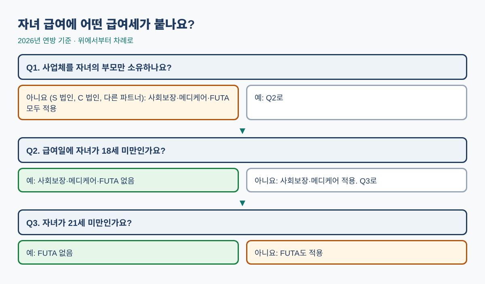
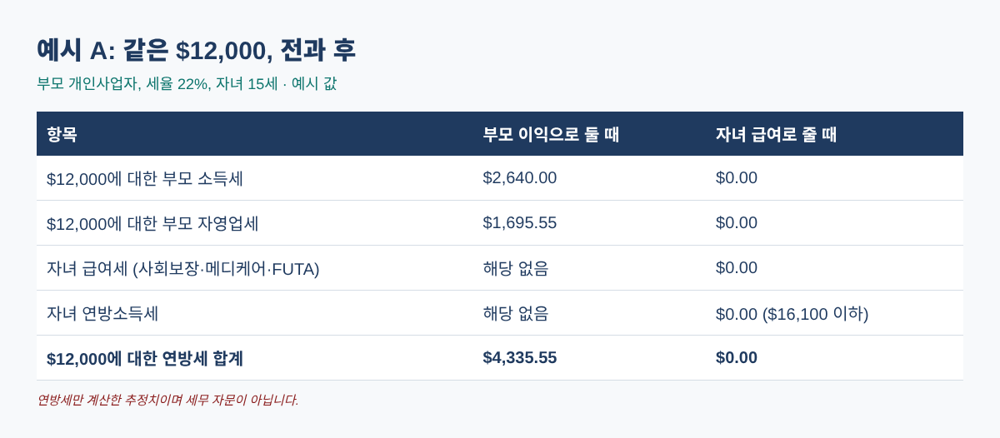
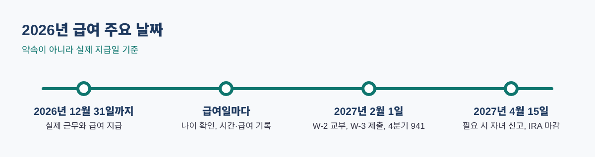

가게 일을 돕는 15살 자녀가 영수증을 스캔하고, 진열대를 채우고, 상품 사진을 찍어 준다면 급여를 줘야 할까요? 준다면 급여세는 어떻게 될까요? 가족 사업에서 자녀를 급여 대상자로 올리는 것은 연말에 할 수 있는 가장 간단하고 정당한 방법 중 하나입니다. 급여는 부모에게 사업 비용이 되고, 자녀는 표준공제 금액까지 연방소득세 없이 벌 수 있습니다.
다만 많은 분이 헷갈리는 두 가지가 결과를 좌우합니다. 사업체를 누가 소유하는지, 그리고 급여일에 자녀가 몇 살인지입니다. 하나라도 잘못 판단하면 혜택을 놓치거나 급여세를 덜 떼게 됩니다. 이 글은 규정, 계산, 서류를 순서대로 설명하고, 엑셀이나 구글 시트에 바로 입력할 수 있는 수식도 알려 드립니다.
이런 분께 필요합니다: 개인사업자, 1인 LLC, 배우자와의 파트너십, S 법인·C 법인을 운영하며 2026년 12월 31일 전에 실제 일한 자녀에게 급여를 주려는 분.
IRS 규정에 따르면 부모의 개인사업체(또는 파트너 전원이 자녀의 부모인 파트너십)에서 일하는 18세 미만 자녀의 급여에는 사회보장세와 메디케어세가 붙지 않고, 21세 미만이면 FUTA(연방 실업세)도 붙지 않습니다. 사업체가 법인이거나 부모가 아닌 파트너가 있는 파트너십이면 나이와 관계없이 모두 적용됩니다.
| 사업체 소유 형태 | 18세 미만 | 18~20세 | 21세 이상 |
|---|---|---|---|
| 부모 개인사업자 (법인 과세를 선택하지 않은 1인 LLC 포함) | 사회보장·메디케어 없음, FUTA 없음 | 사회보장·메디케어 적용, FUTA 없음 | 모두 적용 |
| 파트너 전원이 자녀의 부모인 파트너십 | 사회보장·메디케어 없음, FUTA 없음 | 사회보장·메디케어 적용, FUTA 없음 | 모두 적용 |
| S 법인, C 법인, 부모 외 파트너가 있는 파트너십 | 모두 적용 | 모두 적용 | 모두 적용 |
연방소득세 원천징수 규정은 나이와 관계없이 적용됩니다. 출처: IRS, Family Employees.

B1 칸에 급여, B2 칸에 부모의 연방 세율(예: 22%)을 넣으세요. 부모 소유 사업이고 자녀가 18세 미만이라면:
=B1*B2=B1*0.9235*0.153 (자영업 소득이 이미 $184,500을 넘으면 0.153 대신 0.029)=MIN(16100, MAX(1350, B1+450))=MAX(0, B1 - B3) (B3에 3번 결과)급여 $12,000, 세율 22%라면 $2,640 + $1,695.55 = $4,335.55이고, $12,000은 표준공제 $16,100 이하라 자녀의 연방소득세는 $0입니다. 모두 예시 값입니다.

급여세가 적용되면 효과가 줄어듭니다. 세 가족을 비교해 보세요.
| 예시 값 | A: 개인사업자, 15세 | B: S 법인, 16세 | C: 부모 파트너십, 19세 |
|---|---|---|---|
| 급여 | $12,000 | $12,000 | $16,100 |
| 부모 세율 | 22% | 24% | 22% |
| 사회보장+메디케어 (사업체+자녀) | $0 | $1,836.00 | $2,463.30 |
| FUTA | $0 | $42.00 | $0 |
| 비용 공제로 줄어든 소득세 | $2,640.00 | $3,110.40 | $3,812.96 |
| 줄어든 자영업세 | $1,695.55 | 해당 없음 | $464.17 |
| 자녀 연방소득세 | $0 | $0 | $0 |
| 가족 전체 예상 절세액 | $4,335.55 | $1,232.40 | $1,813.83 |
예시일 뿐이며 연방세만 계산했습니다. C는 부모의 자영업 소득이 사회보장세 상한 $184,500을 넘어 메디케어분 2.9%만 줄어듭니다.
법인이라면 급여세가 실제 비용입니다. C 법인은 공제 효과를 법인세율 21%로 계산하므로 시작 전에 꼭 계산해 보세요.
=(종료-시작)*24로 시간을 계산합니다.
급여만 있고 표준공제 이하라면 보통 신고 의무가 없습니다. 다만 원천징수된 연방소득세가 있다면 돌려받기 위해 신고할 수 있습니다. 부양가족 신고 기준은 해마다 IRS에서 확인하세요.
급여는 근로소득이므로 급여와 2026년 IRA 한도 $7,500 중 적은 금액까지 납입할 수 있습니다. 미성년자는 보통 보호자 관리 계좌(custodial)가 필요합니다.
생일 전 급여는 면제, 생일 후 급여는 사회보장세·메디케어세 대상입니다 (부모 소유 사업이면 FUTA는 21세까지 면제). 급여일마다 나이를 확인하세요.
세법에는 최소 나이가 없지만 실제로 나이에 맞는 일을 해야 하고, 연방·주 아동 노동 규정은 그대로 적용됩니다. 연방법에는 위험하지 않은 많은 업무에 대해 부모 고용 예외가 있지만 주 규정이 더 엄격할 수 있습니다.
급여를 주고 비용으로 처리할 수는 있지만 나이와 관계없이 사회보장세·메디케어세·FUTA가 붙어 절세 효과가 줄어듭니다.
위 수식, 근무 기록표, 18세 생일을 확인하는 급여 기록, 연말 체크리스트를 담은 자녀 고용 급여 플래너(Hiring Your Child: 2026 Family Payroll Planner)는 아래 무료 키트 다운로드에서 가입 없이 무료로 받으실 수 있습니다(엑셀 + PDF 가이드).
이 글은 교육용 자료이며 세무·법률·재무 자문이 아닙니다. 2026년 연방 기준이며 주 규정은 다릅니다. 실행 전 세무 전문가와 상황을 확인하세요.
출처: IRS, Family Employees: https://www.irs.gov/businesses/small-businesses-self-employed/family-employees · IRS Publication 15 (2026), Employer's Tax Guide (Social Security wage base $184,500; FUTA 6.0% on the first $7,000, credit up to 5.4%): https://www.irs.gov/publications/p15 · IRS, Inflation-adjusted tax items by tax year (2026 standard deduction and brackets, Rev. Proc. 2025-32): https://www.irs.gov/newsroom/inflation-adjusted-tax-items-by-tax-year · IRS IR-2025-111 (2026 IRA limit $7,500): https://www.irs.gov/newsroom/401k-limit-increases-to-24500-for-2026-ira-limit-increases-to-7500 · IRS Publication 926 (2026) for the February 1, 2027 W-2 date: https://www.irs.gov/publications/p926 · US Department of Labor, child labor: https://www.dol.gov/agencies/whd/child-labor